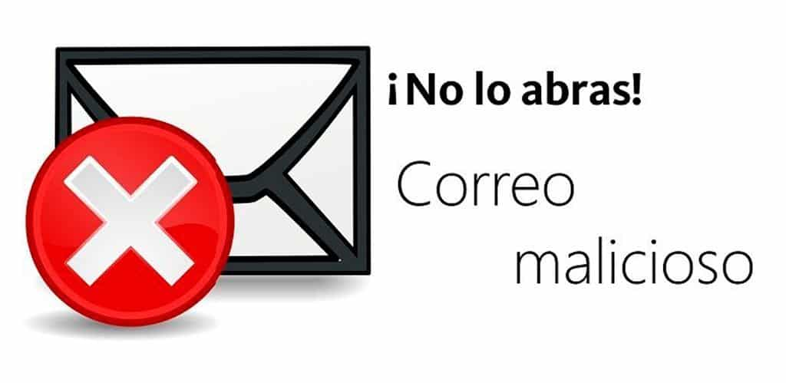
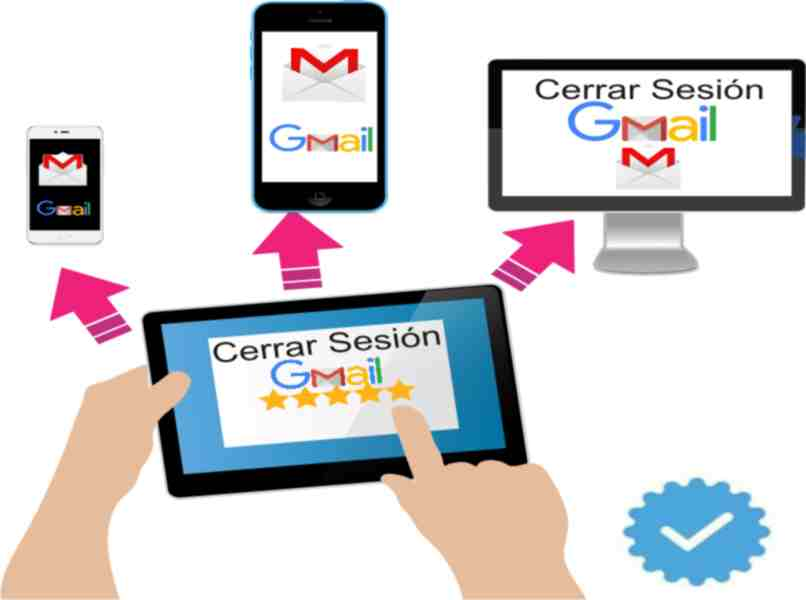

Buenas prácticas
Estas acciones ayudan a mantener segura la información académica.
Contraseñas seguras
Verificar remitente
Cerrar sesión
Estas acciones ayudan a mantener segura la información académica.
Contraseñas seguras
Verificar remitente
Cerrar sesión
Las contraseñas deben ser largas, únicas y combinar letras, números y símbolos para evitar accesos no autorizados.

Evitar abrir enlaces o archivos de correos desconocidos reduce el riesgo de robo de información.
Este método añade una capa extra de seguridad al requerir una verificación adicional.

Cerrar sesión evita que otras personas accedan a la cuenta cuando se usan computadoras públicas o escolares.
Este video resume las principales buenas prácticas para proteger la información personal y académica al usar el correo electrónico.